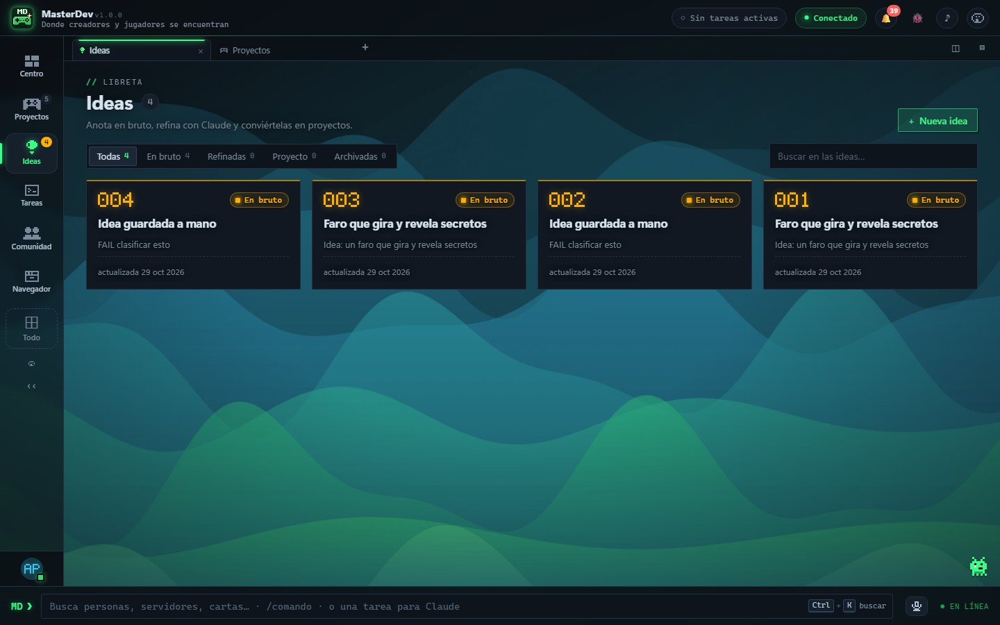
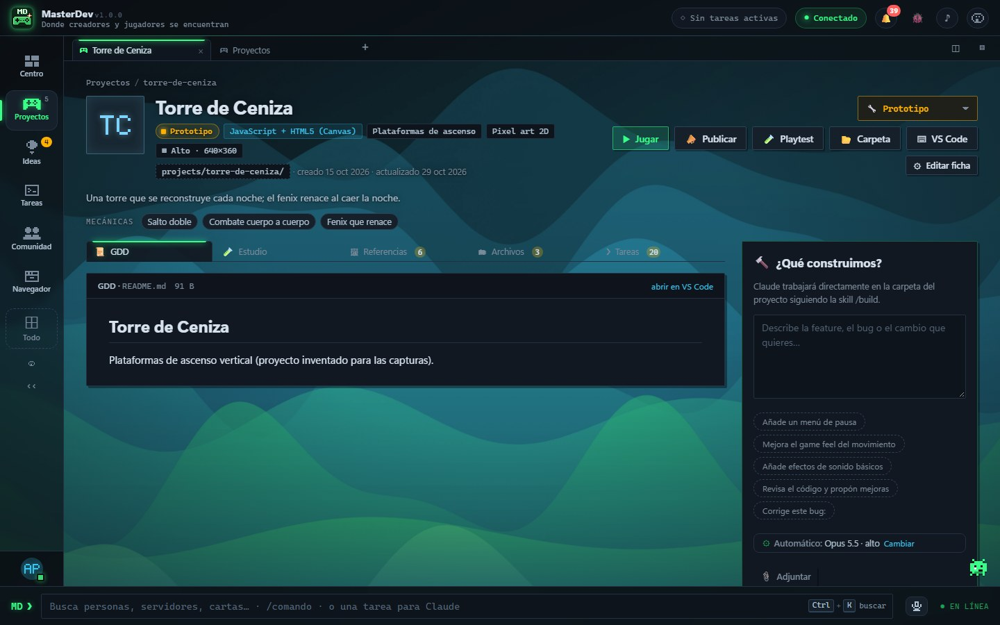
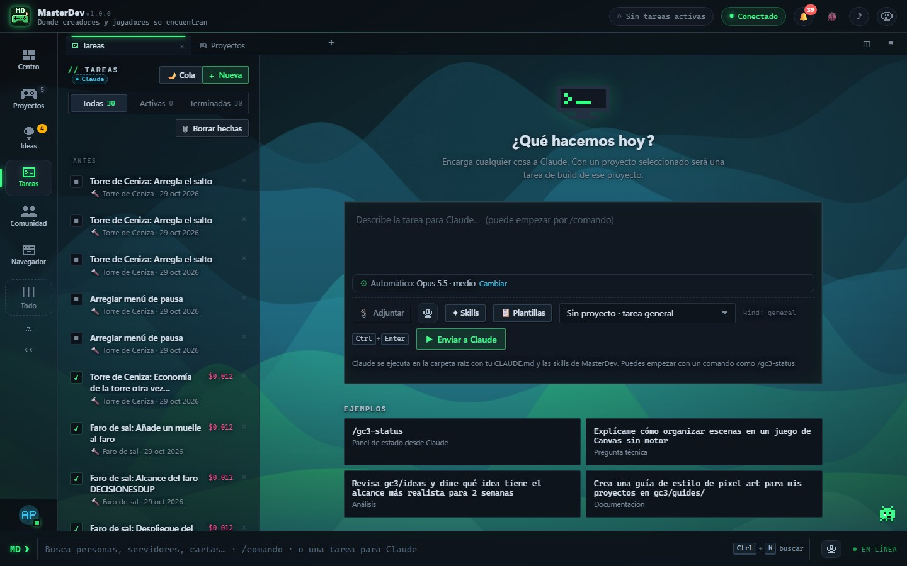
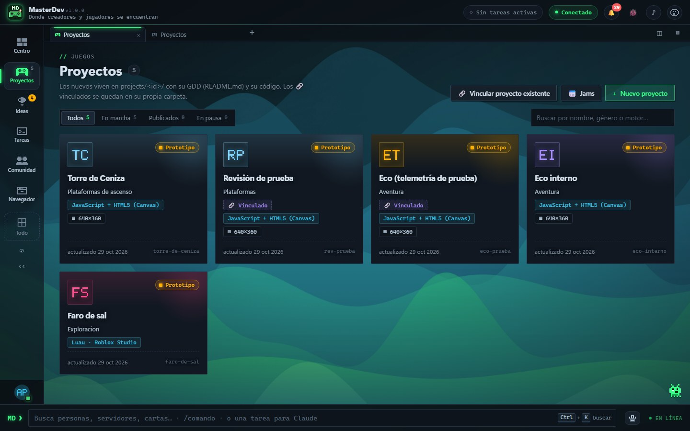

What it does
Builds mechanics, fixes bugs, refines ideas, creates projects from an idea and answers questions about your code.
For creators
MasterDev brings together what's usually scattered across notes, folders, spreadsheets and chats: your ideas, your code, your tasks and what your testers say.
Step 1
Jot down raw ideas, with images, links and notes. When one clicks, turn it into a concept: what it's about, what the player does over and over, and how big it can be for one person or a small team.

Step 2
Pick the engine and resolution for each game. MasterDev creates the design document, the folders and starter code that works. Web games play inside the app with ▶ Play. Already have a game in another folder? Link it without copying or changing it.
Templates for JavaScript + HTML5, Phaser and Roblox (Luau); any other engine per project.

Step 3
Every project has its own studio: the core loop, balance, dialogue, a task board, the bug list, the devlog and the copy for press and store pages. Record voice notes while you play and turn them into tasks.

Step 4
Publish your game in Discover and open a playtest: players mark what happens while they play and answer short surveys. If they agree, you also see how each session was played.
Needs a MasterDev server

Optional
Claude is an AI made by Anthropic. MasterDev can hand it real work on your projects through Claude Code, if you have it. It isn't needed for anything else.
Builds mechanics, fixes bugs, refines ideas, creates projects from an idea and answers questions about your code.
Each request is a task. You watch live which files it reads, creates or edits, and you can reply to keep going.
It uses your own Claude account and plan. MasterDev charges nothing for it.
Since 1.0.3 you choose the main AI in Settings: Claude, ChatGPT (through the Codex CLI) or Gemini (through the Antigravity CLI), on your own plan. The picker only shows your plan's models. Roblox Studio over MCP, skills and Analytics still need Claude.
Settings › AI is a single page: install, sign in and click “Test” for Claude, ChatGPT or Gemini, with a notice when its CLI has a new version and errors explained with their fix. Each task box shows the model and what it costs.
With Ollama you download a local model recommended for your graphics card and small tasks go to it, even offline. If you want, you pick one AI per task type. API keys are optional, billed separately and stored encrypted on your PC.
You choose whether it can edit on its own, asks you first, or only proposes a plan, also for each project separately. The Community never uses Claude.
One view for all your services: their status, what they allow in plain words and a warning when a connection fails. Keys are stored encrypted and never leave your PC; whatever couldn't be sent offline is retried automatically.
It includes its own MCP server: copy its URL and paste it into Gemini's developer mode (or any MCP client) so that AI can look up your projects, ideas and tasks and leave notes in your Inbox.
Before launching a task you see its size, what it will cost and how long it'll take, and you turn off the context you don't need. While it runs you see its steps and, if it gets stuck, you stop it with a summary. Tasks can depend on others, run your tests after each change or be done twice so you keep the best one.
Each project keeps what the AI knows: the code map, your game's glossary, the decisions and where you left off. It can download the official Roblox or Phaser docs so it doesn't make up functions.
The Observatory shows what each AI spends today and this week and, with Claude, your limit percentage and when it resets. You set a cap per project, see which files cost the most and get a report every Monday.
Create agents with their own role, model and permissions (a QA that only plans, for example), triggers that launch a task when something happens and your own MCP servers. Ask Claude, ChatGPT and Gemini the same thing at once or ask for a second opinion.
Get your task alerts on your phone through ntfy or Discord and answer their questions with a button. While you play, say “MasterDev, fix the jump” and the task is created. And generate concept art or edit a screenshot with AI.
An example
MD ❯ Add an enemy that chases the player when they're close
Available
Screenshots and videos from any game on your PC and from yours, by date and by project, with what you need to turn them into store material, devlogs and bugs.
A timeline with a Gallery tab in every project, comparing two builds side by side, searching by the text or color in the image and tagging “bug” to create the bug with its screenshot. With a delay, from an area, in 4K or 8K or from Roblox Studio.
Layers, ×2 or ×4 scaling without smoothing, recoloring with the project palette, removing a sprite's background, CRT filters and LUTs, a GIF editor, batch editing and versions to go back to the original.
Sprite sheets with their JSON (or a Luau module), Steam capsules and Roblox thumbnails with your brand, posters, a press kit, devlogs from templates and your screenshots' palette as .gpl, .ase or .hex.
Your camera in a corner, vertical for social media, chapters, audio only, a replay of the last few seconds and the Roblox Studio playtest, recorded automatically when you press Play. Your testers mark moments with a key.
Cut and join, slow motion, zooms, transitions, music with its license and narration, 9:16 reframing that follows the action and compressing to 8, 25 or 50 MB. Send a clip to an idea, as a GIF to the design document or to an animated card.
To X, Bluesky, Reddit or Discord in their format, links that expire, “which is better?” polls, comments at the exact second of a clip and up to 8 screenshots on your game's Discover page. No hidden metadata, and with your watermark if you want.
Available
Your project's soundtrack, music and sound effects generated for free, Roblox audio and credits for everything you use. And, for you, the same music players get.
In each project's Studio, what plays in the game and your references, by zone (menu, level 1, final boss…), with voice notes at the exact second. Your AI suggests it from your design document and keeps it in mind in every task.
The AI writes a score and MasterDev's synthesizer plays it, with no payment or keys. You listen to it and save it to your project's assets as WAV and OGG.
From the soundtrack, the free assets you download, what you generate and Roblox audio. It flags doubtful licenses and saves a CREDITS.md ready for your store page.
Mark each song as safe for games or for streams. If you stream from MasterDev or have OBS open, only safe songs play, and a clip with unlicensed music warns you when you export it.
Publish up to 15 tracks on your game's page. Whoever listens counts toward a card mission, and your game gains listeners before launch.
Equalizer, your own audio output, music that lowers when you talk, albums and smart playlists, YouTube and SoundCloud search and a mini player on top of Studio or your editor.
Available
Discord, Spotify, Last.fm, YouTube, Google, Bluesky, X, Reddit, Pinterest, Obsidian, Twitch, OBS, Steam, itch.io, Roblox Open Cloud and GitHub, each one with your own developer app. Your keys are stored encrypted on your PC, without a key everything runs in test mode, and nothing is published without your yes.
Your status says which project you're working on (or “a secret game”). The bot announces builds, versions and playtests, brings your players' /bug reports in as drafts in the Studio, bridges a channel on your MasterDev server with a Discord one, and summarizes what your community says.
Your launch, your posts and your scheduled clips in one view. A Google Drive copy of each daily backup, store emails to your Inbox, and Search Console and Analytics for your game's website.
A composer for Bluesky and X, Reddit drafts that only go out with your click, Pinterest boards as references, how each published clip did, and Shorts to YouTube as private. Plus your Obsidian notes linked to your ideas.
Who's playing your game on Twitch right now, a streamer mode that hides your data and puts the chat in a corner, OBS connected and going live to Twitch or YouTube from MasterDev.
Steam sales and wishlists (read-only) and its reviews, your itch.io games and uploading builds with butler, and Roblox Open Cloud to save or publish your place, upload assets and message the servers. Everything that publishes asks for a confirmation code.
Studio bugs as issues, your Actions in Builds and opening a PR with what a task did. “If this happens, do this” recipes across connectors, switched off when created and with your approval, plus tools so your tasks can read issues or prepare announcements without ever seeing a token.
What goes to each service and with which permission, in Privacy.